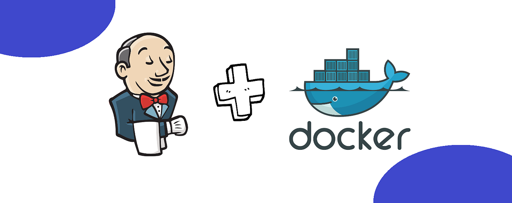
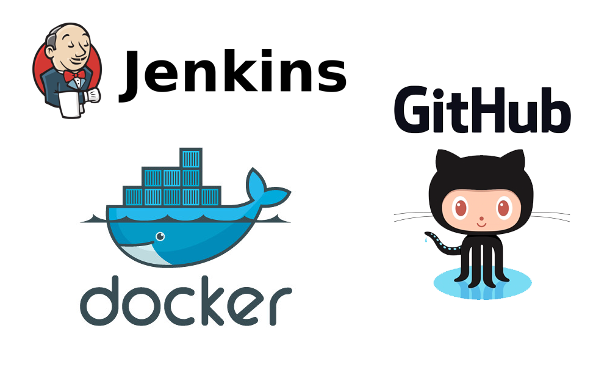
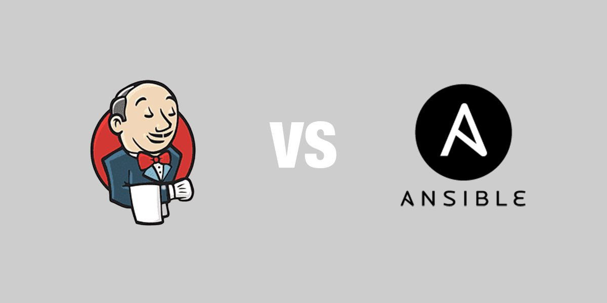
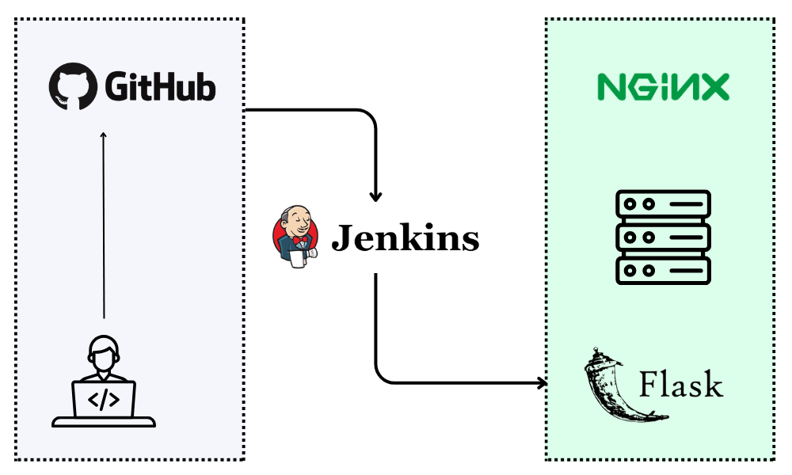
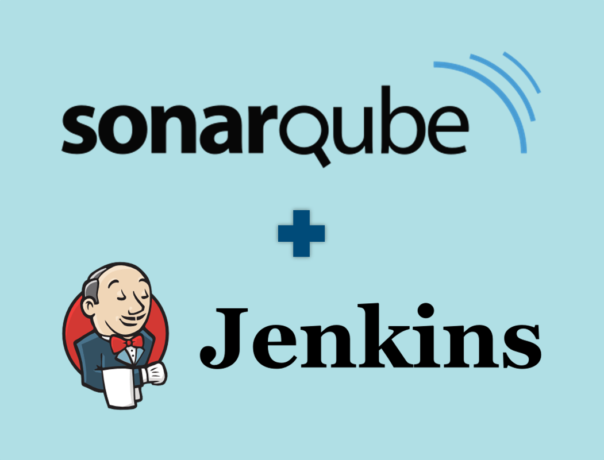
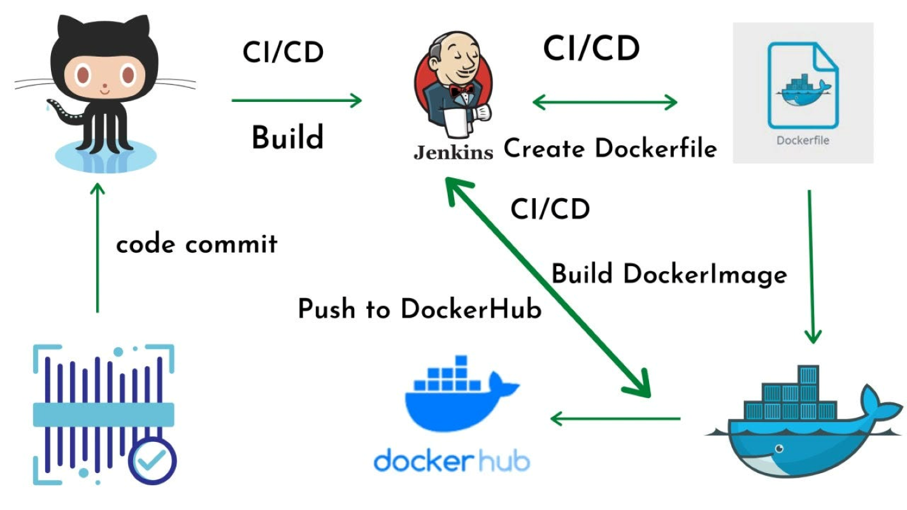
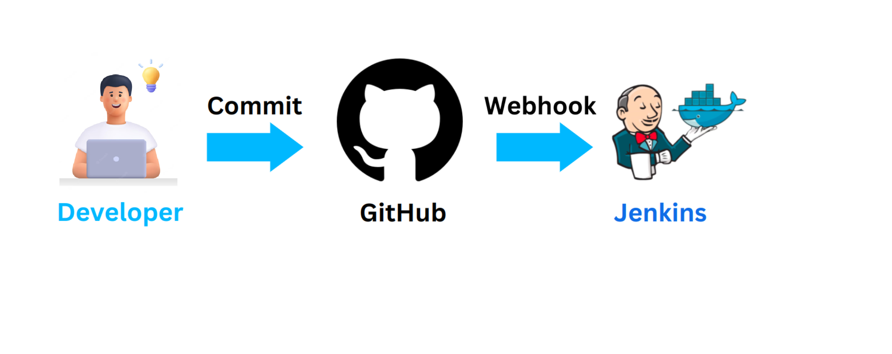

Projets DevOps
Jenkins Docker Server
Configuration d’un serveur Jenkins conteneurisé pour exécuter des pipelines CI/CD.
- Jenkins
- Docker
- CI/CD

Jenkins Docker Pipeline Test
Création d’un pipeline Jenkins pour builder des images Docker automatiquement.
- Jenkins
- Docker
- Build automation

Jenkins + Ansible Application Deploy
Pipeline CI/CD pour déployer une application de gestion de salaire avec Ansible.
- Jenkins
- Ansible
- Automation deployment

Jenkins + Ansible Web Server
Automatisation du déploiement d’applications web via pipeline Jenkins et Ansible.
- Jenkins
- Ansible
- Web deployment

CI/CD Secure Pipeline (SonarQube)
Pipeline CI/CD sécurisé intégrant analyse de code avec SonarQube.
- Jenkins
- SonarQube
- Security CI/CD

Docker Build & Push Automation
Pipeline automatisé pour build et push d’images Docker via Jenkins.
- Docker
- Jenkins
- CI/CD pipeline

Webhooks Testing
Projet de test et validation des webhooks pour automatisation CI/CD.
- Webhooks
- Automation
- Git integration

À propos du DevOps
Ce domaine regroupe mes travaux sur l’automatisation des déploiements, les pipelines CI/CD, ainsi que l’intégration d’outils comme Jenkins, Ansible et SonarQube dans des architectures cloud et containerisées.